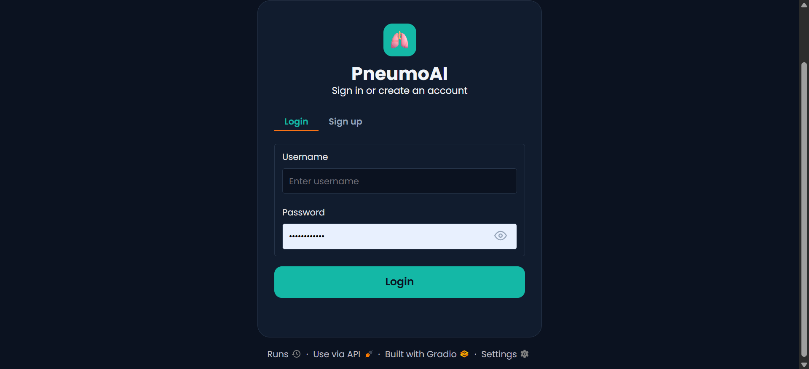
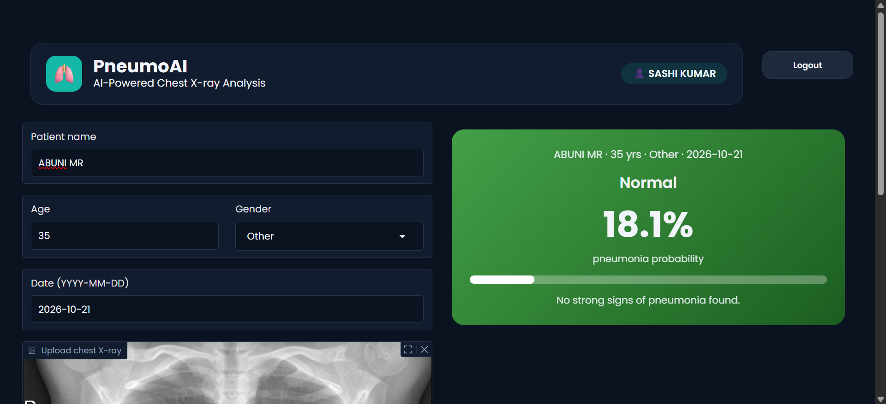
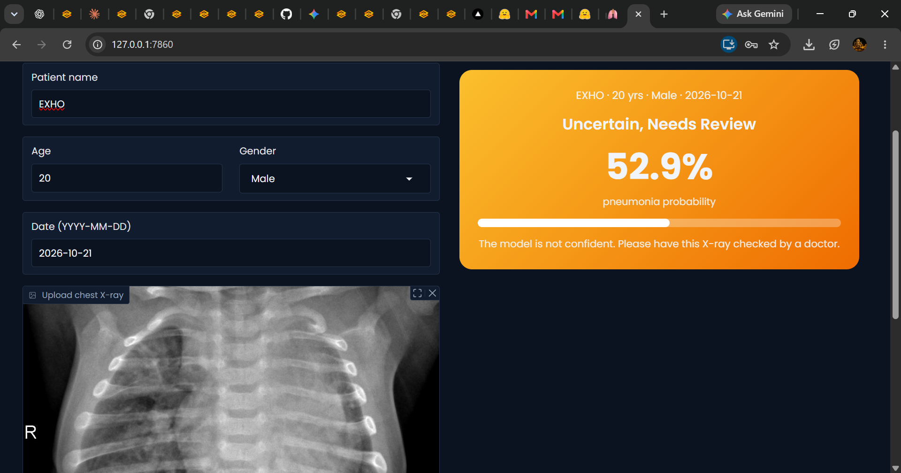
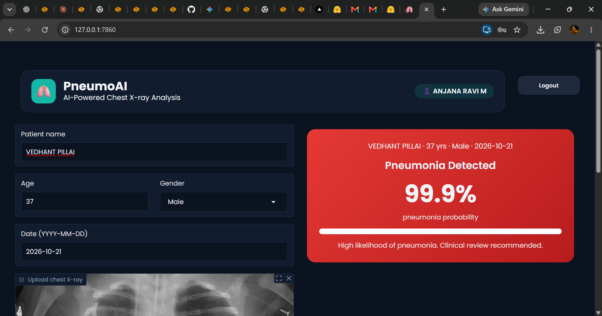
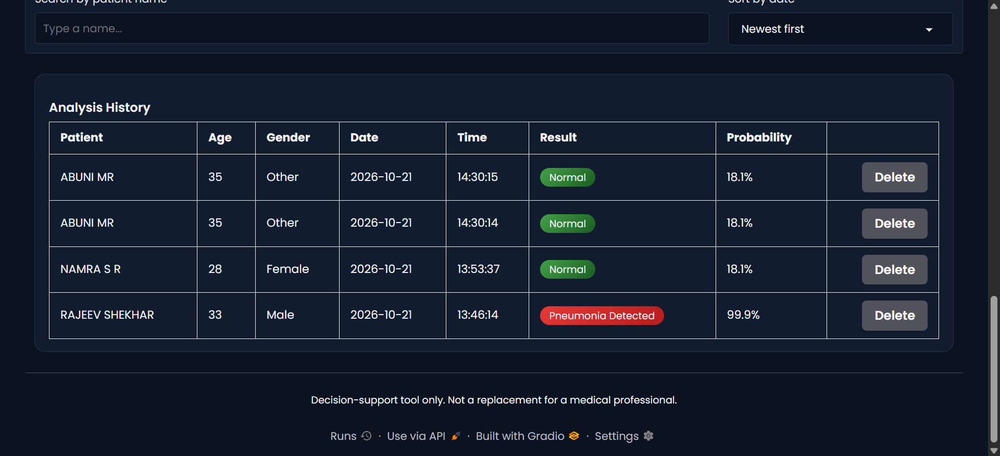

Upload a chest X-ray. Get a pneumonia probability in seconds.
PneumoAI uses a ResNet50 deep learning model to score a chest X-ray and flag whether a doctor should take a closer look. It is a decision-support tool, built as a college main project.
How a result is graded
The model returns one number: the probability of pneumonia.
NormalBelow 40%. No strong signs of pneumonia.
Uncertain, needs review40% to 70%. The model is not confident.
Pneumonia detected70% and above. Clinical review recommended.
How it works
- Log inEach user has an account with a securely hashed password.
- Enter patient detailsName, age, gender and date of the scan.
- Upload the X-rayThe image is resized to 224 × 224 pixels and passed to the ResNet50 model.
- Read the resultA colour-coded card shows the probability. The result is saved to that user's history, where it can be searched, sorted or deleted.
Features
- Sign up and login with show / hide password
- Colour-coded pneumonia probability
- Personal analysis history for each user
- Search history by patient name
- Sort by newest or oldest
- Delete individual records
- Details clear automatically on logout
- Dark interface that is easy on the eyes
Live demo
The live app runs from the team's laptop while we present, so the link is shared on the day.
Screenshots





Built with
PythonTensorFlow / KerasResNet50GradioNumPyPillow
Our team
- Anjana Ravi M
- Abhinandha P Ajith
- Saniya
College of Engineering Chengannur
Please note. PneumoAI is for education only. Its results must not be used for real diagnosis or treatment. Always consult a qualified doctor.